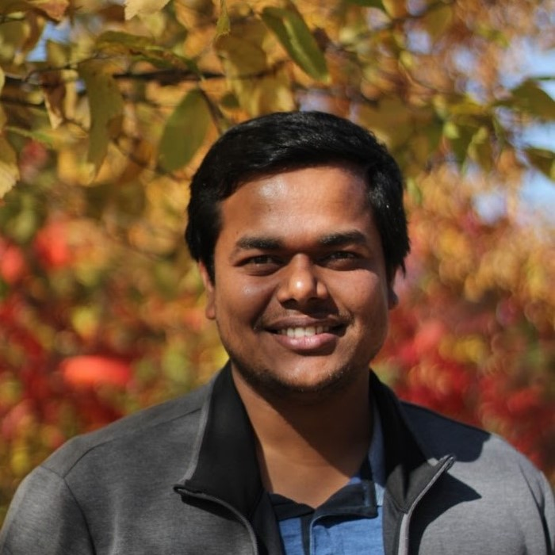

Bappa Ghosh
Postdoctoral Researcher, University of North Dakota, USA


Biography
I am working at the University of North Dakota with Dr. Motoki Takaku . I apply state-of-the-art computational and next-generation sequencing (NGS) techniques to understand chromatin 3D structure and dynamics. I am broadly curious about computers, chemistry and chromatin.
Interests
- Bioinformatics
- Chromatin structure & function
- Polymer dynamics
- Molecular simulations
Education
-
🎓 Ph.D. in Computational Chemistry
IISER Pune, India, 2019
-
🎓 M.Sc. in Chemical Sciences
IIT Kanpur, India, 2013
-
🎓B.Sc. in Chemical Sciences
Visva-Bharati University, India, 2011
Updates !!
- September 2024: Invited talk on "Chromatin 3D Map of Cancer Cells: Big Data, Artificial Intelligence and Promises" at the NSF supported AIChE workshop RAGSAB at California, USA
- May 2024: Presented a poster on "3D Chromatin Organization via Nanopore Concatemer Sequencing" at the conference “Genome Organization & Nuclear Function” at Cold Spring Harbor Laboratory, New York.
- June 2023: Presented a poster on "3D Chromatin Organization in Breast Cancer Cells having GATA3 Mutation" at the "Genome Architecture in Cell Fate and Disease", Gordon Research Conference, California, USA.
- April 2023: Conducted a workshop on "Chat generative pre-training transformer (chatGPT) in the context of scientific research" at the School of Medicine and Health Sciences, University of North Dakota, USA.